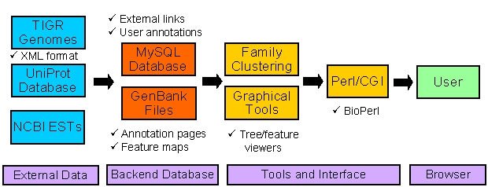

About Cell Wall Navigator
- General Functionality
-
Cell Wall Navigator (CWN) is an integrated database and mining tool for protein families that are involved in plant cell wall biogenesis. Its interface provides comprehensive query and visualization functions for mining sequence features, exploring evolutionary relationships and retrieving biological information within and across families. It is also an annotation forum that allows users to share their expert knowledge about cell wall genes by uploading functional information through an annotation upload function.
Most of the tools in this database are based on modular open-source code that is shared with the public via the BioPerl project (bioperl.org). This modular architecture maximizes the versatility and portability of the computational backend of this resource.

Figure 1
- Data Sources and Analysis
- Included Gene Families
-
At this time, CWN contains gene families that are involved in sugar substrate generation and primary cell wall metabolism. Additional familes can be included in the future for these or related processes, such as secondary wall biosynthesis, wall-associated defense and regulatory mechanisms. Requests for incorporating new families can be sent to the database administrator. Inquiries should contain a suggested family name, its functional category, sequence identifier(s) for one or all of its members and some representative references.
- Sequence Databases
-
CWN retrieves sequences from three different resources:
- the genome sequences from Arabidopsis thaliana and Oryza sativa spp. japonica (TIGR),
- the UniProt database
- and the EST_Others database from NCBI.
This combinatorial database approach has been chosen to cover the maximum space of known sequences while maintaining the completeness of entirely sequenced plant genomes. As a result, the vast genomics and bioinformatics resources available for Arabidopsis and rice can be easily integrated into CWN and the sequences from other organisms are accessible at the same time for comparative studies. Additional plant genomes will be included in the future when they become available in annotated format (e.g. Chlamydomonas reinhardtii, Populus). Sequence redundancies between the genome and UniProt databases are avoided by removing all Arabidopsis and rice entries from the UniProt database and then appending all predicted proteins from the two genomes. The resulting 'UniProt_At_Osa' database is used for populating and updating the families in CWN by sequence similarity searches. EST data are not incorporated into this family population process due to their fragmentary nature and their high redundancy. As an alternative, the EST search results for all family members in CWN can be retrieved through a search form and the annotation pages of the individual family members.
- Sequence Searches for Populating CWN
- Identification and Clustering of Family Members
-
An automated search pipeline populates and updates the CWN families in several steps:
- One or more 'seed' sequence(s) for a family are used to perform BLASTP searches against the UniProt_At_Osa database. All sequences generating BLAST e-values ≤ e-10 are provisionally included into a family.
- Multiple protein alignments are calculated from the retrieved sequences with ClustalW.
- Poorly aligned sequences are removed from the alignments with a Perl script. Alignments with several consensus residues distributed across their entire length pass this filtering step. Rejected alignments are further refined by the curator.
- Profile hidden Markov models (HMMs) are created for each multiple alignment using the hmmbuild and hmmcalibrate modules from the HMMER package.
- HMM models are used to search the UniProt_At_Osa database with hmmsearch. This step retrieves remotely related sequences with higher sensitivity and a lower rate of false positives than BLAST (HMMER e-value cutoff of 0.1).
- Final alignments are created with ClustalW and hmmalign.
- Once a family has a high-quality HMMs established, it can be fully maintained and updated in the future by performing only the hmmsearch and alignment steps (5 and 6) upon new updates of the search databases.
- EST Searches
- The incorporated family members are associated with related ESTs from all organisms represented in the NCBI EST_Others database. This database contains all NCBI ESTs except those from human and mouse. Their inclusion appeared unnecessary since the two organisms are well covered through the above UniProt database. In addition, the extreme over-representation of mouse and human in the EST database would complicate the analysis of the EST data for the user. For retrieving cell wall-related related ESTs, the EST_Others database is searched with all CWN family members using TBLASTN searches (e-value cutoff of ≤ e-10) in quarterly intervals. Due to the vast sequence redundancy of un-clustered EST data and the extensive size of this dataset, the obtained search results constitute by far the largest data domain in CWN. The web interface allows users to efficiently query, filter and sort these results through a separate Search Page and to view them in graphical mode on the annotation page of the individual family members. In addition, the number of EST hits within each family is recorded on a Statistics Page along with the number of proteins included in each family.
- Interface Functionality
- Three Hierarchical Levels
- The CWN interface consists of three hierarchical levels to analyze gene family data. The front page is the (1) Family Selection or Index Page that lists all protein families included in the database. Several batch links are available at this level to retrieve protein/nucleotide sequences in different formats and to compare gene structures between family members. The active hyperlinks of the listed family names open the (2) Family Browser Pages that provide access to the alignments and trees of each family. The hyperlinked entry numbers of this level guide to the (3) Annotation Pages. This deepest level of information retrieval provides access to extensive annotation information about each family member.
- Search Form
- A separate Search Page allows users to efficiently find sequences and other information in this database by providing accession numbers, key words, user annotations or by performing sequence searches with BLAST. The EST BLAST results can be queried, filtered and sorted by many criteria, such as organism names, scores, e-values, etc.
- Feature Viewing [Demo 1] [Demo 2] [Demo 3]
-
Gene structures (exon, intron and UTR boundaries) can be graphically displayed for an entire family or for individual members. Since the required coordinate information is derived from TIGR's XML-formatted genome annotations, this feature is currently only available for Arabidopsis and rice sequences, but not for the UniProt entries. An interactive viewing function is available on the Annotation Pages that allow users to highlight exon, intron and UTR elements in the corresponding sequences by clicking on the graphical features. Similar functions for viewing protein domains and motifs from Arabidopsis, rice and UniProt are available as well.
- Alignment Viewing [Demo]
-
The multiple alignments generated during the family clustering process (s. above) can be displayed on the Family Browser Pages. The default display option for alignments is a overview showing gaps and regional similarities in graphical mode. An alternative alignment view is the HTML mode showing conserved residues and consensus sequences in color. For analyses in local alignment editor, the alignments can be downloaded in MSF or FASTA formats. Sub-alignments containing only Arabidopsis, rice or UniProt sequences are also available in all viewing or download formats.
- Interactive Trees [Demo XXT] [Demo CSL]
-
The alignments for each family are used to calculate phylogenetic trees with the PHYLIP package. A distance-based neighbor-joining method has been chosen for this step that uses PROTDIST with the 'categories model' setting for generating distance matrices, NEIGHBOR for tree construction and the midpoint method in RETREE for defining root positions. In addition to complete family trees, sub-trees restricted to Arabidopsis, rice or UniProt entries can be accessed separately. The internally written program 'TreeBrowse' converts the primary tree files into interactive tree images on the web interface. It allows users to browse through tree structures by collapsing or expanding tree branches, to color-highlight selected members via check boxes on the Family Browser Pages and to open their annotation pages by clicking on the encoded hyperlinks in the tree images. Additionally, the trees can be downloaded for import into local tree viewing applications (e.g.TreeView).
- Annotation Pages [Demo]
- Detailed information about single family members can be retrieved on the Annotation Pages that contain protein/nucleotide sequences, several feature viewing options, annotation upload functionality and many links to external resources for accessing additional information. In detail, sequence features (s. above) and EST BLAST hits can be graphically displayed on these pages. Clicks on the EST bars will open their annotation pages. User annotations can be uploaded here or displayed when available in a dedicated field (s. below). The current set of links guides to the following resources: (1) the sequence annotation pages from TIGR, TAIR and MIPS; (2) the Carbohydrate-Active enZYmes (CAZy) site; (3) the membrane domain predictions form the Aramemnon database; (4) the insertional knockout collections from SIGnAL and GABI; (5) an internal literature collection; (6) pathway and GO annotations and (7) the genome-wide expression data from AFGC, NASC and MPSS. Most of these links are not available for rice and UniProt entries due to the absence of the corresponding resources. Additional links to cell wall-specific sites are available on a separate Link Page.
- Annotation Upload
- An Annotation Upload functionality allows registered users to upload important information from their research about sequences, mutants, phenotypes, antibodies, protein functions and other valuable data. Authors can edit or remove their provided information at any time.